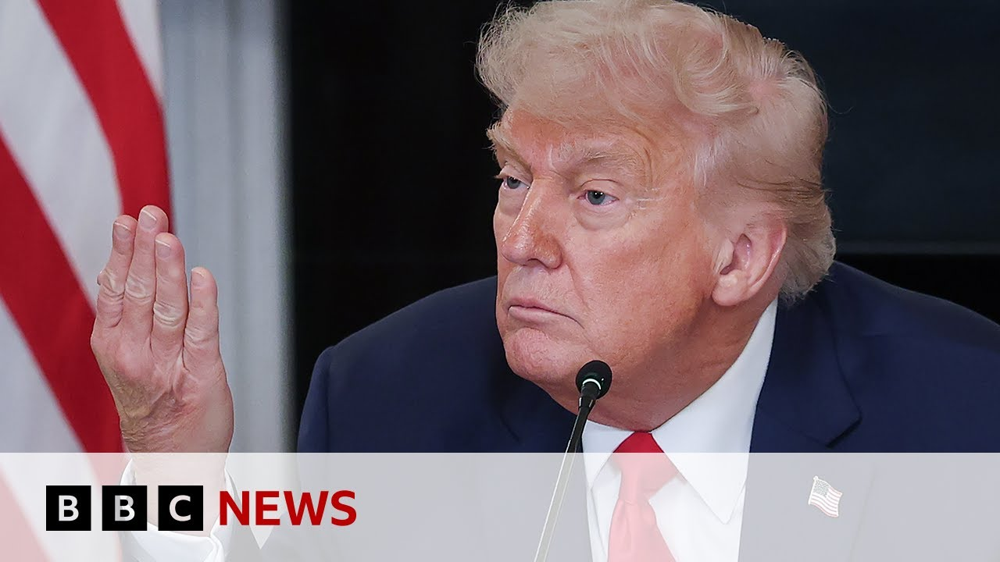

【唐纳德·特朗普誓言“解放”洛杉矶，警方实施宵禁 | BBC新闻】
Summary: An overnight curfew was enforced in Los Angeles amid protests over Trump's deployment of troops, with mass arrests reported; California's governor condemns the move as inflammatory, while the mayor imposes restrictions in the city center.
摘要： 洛杉矶实施宵禁，抗议特朗普派遣军队，警方报告大规模逮捕；加州州长谴责此举具有煽动性，市长则在市中心实施限制措施。

⏱️ Estimated Reading Time: 5 min
📚 六级生词 📚 雅思生词 📚 托福生词 📚 专八生词 📚 SAT生词 📚 考研生词 📚 GRE生词 📚 高考生词 📚 视频里的生词
An overnight curfew has been enforced in Los Angeles where police say they made mass arrests after a fifth day of protest over President Trump's controversial deployment of the National Guard and Marines.
洛杉矶实施了宵禁，警方称在针对特朗普总统有争议地部署国民警卫队和海军陆战队的第五天抗议活动后进行了大规模逮捕。
The White House says the troops are needed in order to protect border control agents on immigration raids.
白宫表示需要这些部队来保护边境巡逻人员在移民突袭行动中的安全。
California's governor, Governor Nuome, fiercely opposes the deployment.
加州州长纽梅强烈反对这一部署。
He has called it inflammatory.
他称这一行为具有煽动性。
Here's some of what he's been saying.
以下是他的一些言论。
Donald Trump, without consulting California law enforcement leaders, commandeered 2,000 of our state's National Guard members to deploy on our streets illegally and for no reason.
唐纳德·特朗普未经咨询加州执法领导人，非法且无理由地征用了我们州的2000名国民警卫队成员部署在我们的街道上。
This brazen abuse of power by a sitting president inflamed a combustible situation, putting our people, our officers, and even our National Guard at risk.
现任总统这种无耻的权力滥用加剧了紧张局势，将我们的民众、警察甚至国民警卫队置于危险之中。
That's when the downward spiral began.
这就是局势恶化的开始。
He doubled down on his dangerous National Guard deployment by fanning the flames even harder.
他变本加厉地煽动局势，进一步强化了危险的国民警卫队部署。
The mayor of Los Angeles, Karen Bass, announced an overnight curfew in the city center.
洛杉矶市长凯伦·巴斯宣布在市中心实施宵禁。
The order affecting an area roughly one square mile in size in downtown LA.
该命令影响洛杉矶市中心约一平方英里的区域。
You can see it here on this map that was posted by the mayor's office.
你可以在这张市长办公室发布的地图上看到该区域。
It will be enforced between 8:00 p.m. and 6:00 a.m. local time.
宵禁将在当地时间晚上8点至早上6点实施。
That is less than an hour from now.
距离现在不到一小时。
Some people were granted exceptions.
部分人群获得豁免。
Emergency medical personnel, people who live and work there and media as well with formal credentials.
急救人员、居住或工作在该区域的人员以及持有正式证件的媒体人员。
We have the latest pictures to show you as well from LA where at least one group of protesters appear to be defying that curfew.
我们还有来自洛杉矶的最新画面，至少有一群抗议者似乎无视了宵禁。
They are moving through an area where police have not closed off the road.
他们正穿过一个警方未封锁道路的区域。
LAPD posting on social media that was addressing what it described as multiple groups and that mass arrests were being initiated.
洛杉矶警方在社交媒体上发文称正在应对多个群体，并已开始大规模逮捕。
Footage too of several people being detained in the downtown area.
还有画面显示数人在市中心被拘留。
Not clear if those arrests are for defying the curfew or failing to observe an earlier dispersal order from the scene of an unlawful assembly.
尚不清楚这些逮捕是因为违反宵禁还是未遵守此前非法集会现场的驱散命令。
For more details, here's Jared Hill in New York.
更多详情，请听纽约的贾里德·希尔的报道。
Lucy, we've seen these demonstrations happening uh in New York, in Chicago, as well as parts of Texas, uh Washington DC, California, obviously multiple of those.
露西，我们看到这些示威活动发生在纽约、芝加哥，以及德克萨斯州部分地区、华盛顿特区、加州，显然多地都有。
Here in New York yesterday, uh there were hundreds of people, if not somewhere close to a thousand who were protesting really in one particular part of the city.
昨天在纽约，有数百人，甚至可能接近一千人，在城市的一个特定区域抗议。
I think that that's one of the things that's important to keep uh in mind here with all of these protests that we're seeing is that largely they are pretty isolated to specific parts of these cities.
我认为这些抗议活动的一个重要特点是，它们大多局限于这些城市的特定区域。
There were a couple of dozen arrests yesterday here in New York, mostly related to things like disorderly conduct.
昨天纽约有几十人被捕，大多与扰乱秩序等行为有关。
Uh there is another protest scheduled for today here in New York as well.
今天纽约还计划举行另一场抗议活动。
One of the big questions obviously is going to be how long does this last?
一个显而易见的重要问题是，这会持续多久？
how, you know, how much do we continue to see these protests around this specific issue?
我们还会看到多少围绕这一特定问题的抗议活动？
Uh there have obviously been constant protests ever since President Trump took office and uh this is the latest powder cake.
自特朗普总统上任以来，抗议活动显然持续不断，而这是最新的导火索。
Well, Jared, they're mentioning where we have also seen some protests in Texas.
贾里德，他们还提到德克萨斯州也出现了一些抗议活动。
The governor there, Greg Abbott, he's a Republican, has announced that he's deploying the National Guard at several locations across the state.
该州州长格雷格·阿博特（共和党人）宣布在全州多个地点部署国民警卫队。
He says he wants to, in his words, ensure peace and order.
他表示，用他的话说，是为了“确保和平与秩序”。
And that follows reports which he has posted links to on social media that he is also sending troops to the city of San Antonio ahead of planned protests against the federal crackdown on immigration which has led to thousands of deportations.
此前他在社交媒体上发布链接称，还将在计划举行的抗议联邦移民打击行动（已导致数千人被驱逐）前向圣安东尼奥市派遣部队。